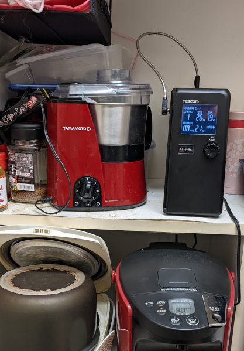
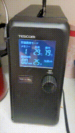

TESCOMが新開発した、低温調理器「芯温スマートクッカー TLC-70A」レビュー
というわけで手に入れました。
全く持って期待通りだったので珍しくレビューを書きます。
事の経緯
低温調理については7年前だったかに、オライリーの本で「Cooking for geeks」という、こう「プログラマ」と「自宅料理(家料理ガチ勢)」の両属性を持っているヒトにスマッシュヒットした本がありました。
そこに「低温調理」の理論と方法が乗っていて、、、それに触発された人たちがプラの衣装ケース＋バランス釜の湯やらいろんな湯で低温調理をやってブログのネタにしてみたり、そうやってるうちにAnovaとかネット対応したお湯を温めて食材を真空にした袋に入れる系の低温調理器が出てきたり、少しつづ「家でも低温調理」というジャンルとブームが形成されていった…ってのがありました。
プロの世界では、コンベクションオーブンとか恒温槽のようなのがとかあったりで、歴史を紐解くと40年前にはあったそうで（海外では真空調理と言われます）、セントラルキッチンのシステムが実現できているのもこの技術のおかげとも言われています
ということでボクも割とギークの間で低温調理が流行った頃から低温調理には興味があり、いつかやらなきゃなぁなんて思ってたわけで、「今年こそ買うぞ」みたいに思っていてもなかなか購入に踏み切れていませんでした。
特に去年の年末なんて「Bonic買うぞ！って」なったときに何か丁度TVでBonic特集をやってたそうでその後Bonicは売れに売れ、ボクが意を決した頃は本体が完全に売り切れしていて泣きをみました。
んで、年が明けてBonicの在庫が復活したわけですが、今度は専用の6リッターコンテナが売り切れて生産予定もなし…ということでやる気をすっかりなくして今年はどうすっかなぁ〜って感じでした。
で、GWも特にどこに行くわけでもなくだらだらYoutubeを観ていたら、いつも観ている大西シェフのYoutubeチャンネルの「COCOCOROチャンネル」で、新しい低温調理器の動画が。。。
観た瞬間「もうこれ誤家庭用低温調理の決定版じゃないか！！」と。。。
何が特に惹かれたかというと、針のような温度計測装置（プローブ）が実装されていることで完全に肉の中心温度が計測可能であるということ。
これは、動画でも出ているように業務用のコンベクションオーブンで無いと実装されていない機能でこれは画期的すぎると。。。
つまり、例えば食材が冷えててもそうでなくても中心温度を監視しているので同じ条件で安全に火入れ可能ということ。。。
あと、お湯使わなくて良い＆省スペースであるということ。。。
ただ、まだ世に出ていなくて俗に言うクラウドファンディング状態ということでした。
しかし値段が異様に安いしこれはぜひとも実現してほしいし、支援しなくてはということで動画観終わって速攻で支援しました。
その甲斐あってか、その2日後には達成＆7月末までの出荷分完売、しばらくして11月出荷の追加のめどが立ったということで、追加支援が出来たわけですが、それも残3つを残してほぼ完売という…なかなか凄いことになってました。
こんなのわかってるヒトにしかわからんみたいなプロジェクトだけど、いやはや達成してしかも追加注文も割と埋まるとか、家メシガチ勢増えたのかなぁ凄いなと思いました。
到着
箱には「芯温が低温調理を変える。」なんてことが書かれています。コンセプトがしっかりしております。
この姿勢、見習いたいものです。
あと、型番はTLC-70Aという型番がついてました。
箱を開けるとこんな感じで、温度計測用の器具(プローブ)と本体、説明書と大西シェフのレシピ本が入っていました。
ボクと同じく支援リターンで手に入れたヒトはこの紙はなくさないようにしましょう。
{kind=link}
{kind=link}
{kind=link}
初手は温泉卵
「Cooking for geeks」という本を出版したオライリーが発刊している「家庭の低温調理」という本があります。
この本はひたすら低温調理についてを細かく書かれていてレシピも手の混んだのが多くておいそれと真似できるわけではない内容が多くて、オライリーにありがちな難書なんですが、まずは卵をやってみるべしということが書いてあります。
家庭の低温調理ー完璧な食事のためのモダンなテクニックと肉、魚、野菜、デザートのレシピ99 (Make: Japan Books)
これの理由は、外国では(本の著者は外国人なので)安全な生卵食べることは出来ないそうで、我々日本人は安全な生卵が食べられるので謎に思われがちですが、最初に卵を低温調理して感動しただの、この当たりの事情が熱弁されております（日本は生卵食べられるすごい恵まれてるみたいなことも書かれております）。
我々は安全な生卵が食べられる日本に住んでるわけで、日本でとりわけ卵を低温調理する意味はなく感動は薄れそうですが、しかしボクもこの本に倣って最初は卵料理で何か…というわけで、定番の温泉卵をやってみました。
レシピはTESCOMさんの「活動レポート」に乗っていたレシピをとりあえずコピーしました。
材料 卵・・・お好みの個数
水・・・400ml
つくり方
①フリーザーバックの中に卵と水を入れる。
②①を庫内に入れ、調理モード・庫内温度80℃・40分に設定し、調理を開始する。
ということで卵2つでやってみました。
{kind=link}
{kind=link}
{kind=link}
最初にこういうセリアなどの百均にある卵穴あけ器で穴を開けておいてから卵を入れると剥くときに困らなくて良いです。

芯温測るわけだからそういや卵料理とかオイルコンフィとか、ヨーグルト作るとか、液体系とか殻がある系はどうしたら良いかななんておもってたわけですが…芯温測るモードだけではなくて、庫内温度を何度何分に設定できてそのとおり調理もできるということで、従来の低温調理器のようなこともできてこれは良いなと。
水から初めて、20分くらいで80度到達で、結果はこれぞThe温泉卵という仕上がり。
鍋だとコンロによって火加減を気にする必要があり、何度か最適解をトライする必要がありますが、卵のコンディションの違いはあるにせよ流石に公式レシピがあり同じ機材で失敗ほぼ無しなのが良いですね。
定番のローストビーフ
ボクは毎年年末にはローストビーフを作って、年が明けてお正月におせちの一品として食べるということをしていたわけですが、残念ながら去年は低温調理器が買えなかったので結局作らずじまいでした。
その前の年もその前もローストビーフを作り続けていたわけですが、そのときの方法は
１.普段の低温調理の如く、鍋にお湯を用意して、７０度くらいにしておく
２.ジップロックに肉を入れて限りなく真空状態にする
３.それを鍋に入れる。火は弱火。
４.温度を時々図り、下がりすぎていたら火を強め、上がりすぎてたら火を落とす
５.これを大体1時間30分行う。70度1時間30分で完成とする
特に行程４が曲者で、これの火の管理が思った以上に難しいし大変です。
特に忙しい年末で1時間30分も肉の面倒に縛られるのもなかなかつらい感じでした。
本来、食肉を安全に加熱するには「食肉の中心部が63度30分か、75度1分の加熱」と決まっているわけですが…この方法は中心温度(芯温)を図っていないわけで、時間の根拠も「これくらいやれば到達しているだろう」ということで曖昧だったりします。
ということで、自分で温度調整して作るのは兎に角面倒なわけです。
しかし、芯温スマートクッカーだと食肉の中心温度を測るのはマシンがやってくれるので放置で完璧。
その間仕事していたり、完全に他のことをしていてもOKなわけで、この「63度30分中心温度加熱すべし」という殺菌にはなくてはならない行為をオートでやってくれます。
とまあ前置きが長くなりましたが、以下でやってみました。
[材料]
牛もも肉：314g(100g702円、国産牛)
塩：6g
黒胡椒（ミル引き）：適量
[設定]
芯温：63度
庫内温度：68度
時間：30分
おまけ：グレービーソース
[材料]
ドリップ液：全量
バター：少量
にんにくおろし：少量
赤ワイン：少量
塩コショウ：少量（なくてもOK）
[作り方]
スマートクッカーで仕上げた肉から出た液(ドリップ液)をフライパンに入れる
他の材料を入れて、火を掛ける
アルコールが抜け、バターが溶け切ったら完成
ほぼレシピ本のままですが、もも肉300gなのとガーリックパウダーなしです。
グレービーソースはボクが適当に作ったオリジナルです。
やっていってる様子は以下です
レシピ本のレシピよりも100g少なかったけど、さすがに芯温測れるだけあって完璧にできました。本当に火入れ完璧。完アンド璧すぎてやばい。まじでうまい。うまいうまい。語彙力と肉がすぐになくなる勢い。おそらく過去一の出来。
普段はこんな高い肉は正月でも買わないんですが、芯温測れるから失敗は無いだろうというわけで意を決し、奮発しました。
お肉が高いのもあるのかもしれませんが、適度にしっとりとして肉の風味も損なわず文句なしの旨さでした。
芯温が上がりきるまで調理時間が経過しないので、トータルでだいたい2時間40分かかりました。
このあたり実際トータルで何分掛かるかというのはやってみないとわからないところだなあと。
翌日の朝は、ちょっと残しておいたローストビーフと、同じく本製品で作った温泉卵でローストビーフ丼OnThe温泉卵にしました。
この「コメ＋肉＋半熟卵」の破壊力よ…まったく朝から半端ねぇっすわ
{kind=link}
{kind=link}
{kind=link}
{kind=link}
{kind=link}
{kind=link}
{kind=link}
{kind=link}
今度はグラムがもっと安い肉でも試したいですね。
実は本命のサラダチキン
安くて低脂肪、かつ、高タンパクというわけで、鶏胸肉を時々買ってるわけですが、これを安全にかつ美味しく調理する方法ってのが難しいんですよね。
かといって、市販のサラダチキンはというと時々時間がないときとかに買って食べるわけですが、正直あまり美味しいとも思えないんですよねアレ。
このあたり、筋トレを趣味とされているトレーニーの皆さんにも頭の痛い問題だと思います
鶏胸肉を美味しく…となると、なるべくパサツキを抑える必要があって、ボクの場合は蒸す(18分蒸して10分休ませる)か、切って片栗粉をまとわせて茹でて水晶鶏にするか、同じく薄く切って片栗粉をまぶして野菜炒めとするか。。。くらいでした。
あとは炊飯器をつかった鶏ハムです。
これは鶏胸肉を二枚にして丸くすまきにしてラップで包んで、ジップロックに入れて限りなく真空状態にして、炊飯器に水張って調理する方法です。
包むときにフレーバや味としてチーズやらにんにくやら、後はバジル、カレー粉なんてのも入れると色々楽しめます
この方法は低温調理と似てはいますね。
あとは電子レンジを使った方法で作ったこともあります。電子レンジは10年前に友人からもらったものをずっと使っていまして、これがマイクロ波の飛び方が微妙っぽくて時々部分的に生だったり、火が通り過ぎていたりというのがあります。
蒸す方法でもやったこともあり、蒸す方法は割と失敗がない感じですが、鶏胸肉の状態や冷え具合によって左右されることもあり、鶏胸肉に関してはなんとか美味しく食べる方法はないかと結構いろいろやっています。
ボクは別にローストビーフを作るためだけに低温調理器がほしかったわけではなく、低温調理器を欲しがってた理由がこの安くて調達しやすい鶏胸肉を安全にかつ美味しく食べたいというのが大きいです。
ということでやってみました。
[材料]
鶏むね肉：300g
塩：3g
砂糖(きび砂糖)：3ｇ
にんにくおろし：少量
[設定]
芯温：70度
庫内温度：80度
調理時間：6分
鶏むねに塩と砂糖とにんにくおろしを刷り込み、15分冷蔵庫で寝かせた後、水分拭き取りセット。
レシピ本は350gでやってましたが、ちょうどのはなくて今回は300gです。
全体の調理時間は一時間半と書かれていましたが、加熱3時間経過しても終わらなくて、芯温67度あたりだったのでこれは安全だろうということで自己責任で終了させて、中を確認したらちゃんと火が通っている感じでした。
皮をちょっとパリッとさせたかったので、冷やした後でフライパンで30秒ほど焼きました。
こんな感じ。

この具合は完全に安全域だなってのは経験上わかってるので、食べたところややみずみずしさは残るもののしっかり火は通ってるなぁという感じ。
時間が結構かかってしまったので、この火の通り具合でよければ芯温67度庫内80〜85くらいで良いかもしれないですね。
ただまあこの火の通り具合だと蒸し器でも狙えるレベルなわけでして、この調理器の真価は芯温度が測れて安全に配慮して加熱できるという所…
こうなってくると「ぎりぎりを狙ってもいいんじゃよ？！」の心で、今度はもうちょっとギリギリ狙うことにしました。
[材料]
鶏むね肉：250g
塩：3g
砂糖(きび砂糖)：3ｇ
[設定]
芯温：63度
庫内温度：68度
調理時間：30分
ということでローストビーフと同じ設定です。
ギリギリって言っても「中心温度63度30分」は守ってるわけで、怖いサルモネラは倒せます（アメリカの基準では63度8分24秒）
カンピロバクターはどうかというと、こいつはサルモネラよりも熱に弱いのでサルモネラ倒せる温度なら倒せます(牛乳中だと60度80秒)
おおよそ2時間40分で調理完了。このへんは大体ローストビーフと同じ時間ですね。
芯温70度庫内80度とは調理後に袋に残る肉汁（ドリップ）量が明らかに少ない感じ。これは期待できます。
比較画像として、左が70度、右が今回やった63度です
冷やして、表面だけバーナーで焦がしてから切ってみると
完アンド璧な仕上がり。やっぱり低温調理はこうでないといけませんね。
写真ではわかりにくいかもしれませんが、明らかに70度とは違うみずみずしさ
実際みずみずしさものこっているのに、さほど生感はなく、非常にほどよく「もう63度68度30分で良いかな」みたいな気持ちになりました。
70度のやつと食べ比べしましたが、本当に差は歴然としたものがあって言い過ぎかもしれませんが次元の違いを感じました。
70度も悪くはないんですが、うーんボソッとしてるなというのを感じざるを得ません。。。
僅かな温度差だけど、ここまで違うのかと…。63度凄い。
63度のは低温調理器なしでは自力で安全に到達できるものではなく、これは低温調理器でないと出せないし、この芯温スマートクッカーで的確に「中心温度63度30分」を確認できるからこそ安全に狙えてるわけで…ということで、本製品（TLC-70A）の真価を存分に味わえました。
ローストビーフは失敗なくできるわけですが、やっぱこの製品の真価を味わうには中心温度をちゃんと狙わないと即食中毒行きの、鶏とか豚肉をやるのが良いですね。
あと、本当のガチ勢はブライン液なんか作って漬け込んでからやるともっと凄いんだろうなぁって感じがしました。
ボクよりもガチ勢なヒトはぜひやってレビューしていただきたい（そしてレシピも出してほしい）です。
しかしまあ鶏胸肉でこのレベルなので、鶏もも肉とかでもやってみたいなぁと思ってしまいますねこれは…
{kind=link}
{kind=link}
{kind=link}
最後に
最後に、あえて良い点と悪い点を上げると以下です。
良い点
-
芯温度が測れて安全性に根拠のある低温調理ができる
今までの低温調理器は根拠なく値を決めていて不安感は残っていたけど、本製品は実際に測りながら細かく温度調整を機械側でやってくれるので安心して低温調理を楽しめる -
省スペースが良い
こんな感じに置いています。非常に助かります。
 -
芯温モードだけではなく調理モードもあり、これまでの低温調理ライクな使い方や温泉卵、ヨーグルト作る用途も可
色々飽きなく普段使いできそうです。 -
操作が簡単、余計な機能は無いのが良い
あと説明書に小さく書いてありますが、調理開始後にどんな設定してたっけ…ってのはダイアルを押すと出てきます。

なお、調理開始後に設定変更は不可なので、一旦停止を押して設定を変えてから再度開始ボタンを押すようです。 -
350ｗとこの手の熱を使う家電にしては意外と電気喰ってるわけではない
{kind=link}
{kind=link}
悪い点
- プローブを外に引っ掛けようとしても引っかからない
ここに引っ掛けると良いよって説明書にかいてあったものの、うまく引っからず収まりが悪いなと。
結局我が家では外して別保管してます。
もうちょっと出っ張りがあればいいかなぁと
- 途中で時間増やしたいとか、設定変更できれば良いかな
一長一短だけど、現状は時間増やしたいとかなったときに、停止ボタンを押す→再度設定をする→開始ボタンを押すという感じなので…
多分これは間違ってダイアルを回されても困るということで、チームでどうするか議論があったんじゃないかな〜なんて思いました。
- 温度計の校正（補正）どうするのかな問題
温度関連のプロジェクトに一応関わったことがあるのでわかるのですが、こういう熱電対やサーミスタ（多分この製品はNTCサーミスタを使っていると思う）を使用した温度を測ってなにかする系ってのは時間の経過とともに意外と本当の温度との誤差が生じてしまうものなんですよね。
そのズレをちゃんとした温度計を使って検査して治す（具体的には値を調整する）のが校正と言われるものです。
精密性を要求される製品や医療用だと1年〜3年おきに製造元が一旦製品なり部品を預かって温度校正をして返すとかそういう仕組みというか取り決めがあります。 そのへんどうなのかなと。
家庭用だし、0.1度を争うわけではないからそのあたりは良いのかなと。。。
経験上サーミスタは同じ製品であってもそれぞれ0.2〜0．3度ズレがあって、これを生産時に1個1個校正をしてから出荷するわけですが、年数経って±1.0度ズレたとかそういう大きなズレはまぁ聞いたことがないのでいいのかなぁと。
他の低温調理器ってどうなってるのかなと調べた所、AnovaみたいなStrata Sous Videだと校正不要と書いてあるものの、0.1度単位で温度が設定できるためなのか温度を補正する方法が設定項目にあったわけですが、本製品はそのような設定や補正方法が無いのでちょっと気になりました。
- 芯温度の上がり方が遅い
これは構造上仕方のない部分かもしれないし、もともとどんな方法を使っても「中心温度はそう簡単に上がらないよ」ということかもしれません。
かといってパワーを上げると周りばかりが熱を持ってしまい、結局蒸したりしてるのと変わらんみたいになるってことになりかねません。。
ちょっと懸念があるのが、本製品は水を張る低温調理器と違って、完全に真空に出来ないから遅いのかもしれないっていうのがあります。
蓋があるとはいえ、プローブを入れないといけない関係上どうしても上部が空いてしまうのでなんか耐熱ゴムとか使ってできる限り密閉できればよいのかもしれないですね。
空気のほうが水よりも温度の伝わりが遥かに遅く、水よりも20倍の違いがあると言われているので、水を張ったジップロックの中に更に食材を入れたジップロックを入れるとある程度短縮化できるかもしれないけど、溢れるかもしれないことを考えると微妙かもしれない。。
と考えると、これはいかにして食材に熱を伝えるかという熱伝導の問題で、幅ギリギリの食材なら逆に熱が伝わりやすく調理が早く終わるのでは？とかあるかもしれず、そう考えると万力みたいにハンドルを付けて食材の幅に密着できる構造があればよかったのかも？と思いました。
悪い点も上げましたが、これは致命的ってほどではなくほぼイチャモンレベルですはい。
本当になかなか良いもので、遂に出てしまった家庭での低温調理器決定版だなあと。
早く一般製品になって、量販店に並ぶ日が来ると良いなぁとは思いました。
余談：低温調理を始める上においての中心温度（芯温）について
ここの温度が上がりすぎると安全ではあるものの、タンパク質が硬化してしまい肉によっては肉汁は出ていくわぱさつくわ…ってことになります。
かといって低くてもそれはそれで駄目で、食中毒原因菌に大腸菌とか居ますが、鶏肉だと特にサルモネラとカンピロバクターという少量でも増えてしまう危ない菌やウィルスも居てある程度の熱を加えないと死滅しません。
（特に鶏の生は危ないということで、スーパーの加工場だと鶏肉だけは別セクションになってたりしますね）
ということで、菌を死滅させるためにある程度の加熱は致し方なく必要で、よく言われているのは「食肉の中心温度が63度30分か75度1分」と言われています。
なお、厚生労働省は以下のように定義しています。
https://www.mhlw.go.jp/content/11130500/000365043.pdf
引用すると以下の通り
Ａ．「75℃、1 分」と同等な加熱殺菌の条件として、「70℃、3 分」、「69℃、4 分」、「68℃、5 分」、「67℃、8 分」、「66℃、11 分」、「65℃、15 分」が妥当と考えられます。
また、調理の現場においては、中心温度計の適切な使用により、食肉の中心部の温度が目標とする温度を下回らないことを確認し、確実な加熱殺菌が行われるようにする必要があります。
ということで、一応厚生労働省なので「63度30分」が無いところを見ると、厚生労働省がアンサーとして言っているこの数値は安全面に完全に倒した設定です。
これを守っていればまぁ大丈夫と言えます。低温調理する際は参考に出来ますね。
また、アメリカの基準では次の通りです。
サルモネラ菌をパスチャライゼーションするには、71℃で即時、68℃で15秒、66℃で2分42秒、63℃で8分24秒の保持時間が必要である。
（Cooking geekから引用）
ということで本当のガチで際っきわを狙うには63度10分なわけですが、あまりにも際なのでまぁこれは自己責任でどうぞ…ってところですね。
ボクは「芯温度63度30分」が最低ラインかなと思います。